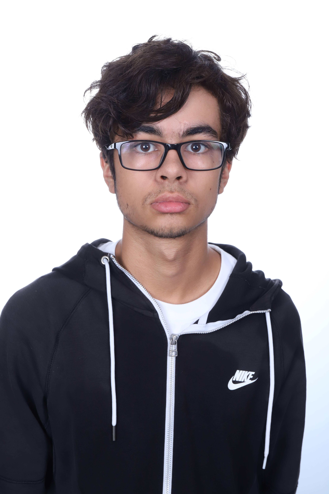

Maxime Rampazzo est un jeune élève de l'EPITA. Suite à la séparation de ses parents à la naissance, il vécut 12 ans sur l'Île de la Réunion entre ses 5 ans et ses 17 ans, puis il revint en métropole pour faire ses études. Passionné d'informatique depuis son plus jeune âge, il découvrit le jeu vidéo chez son père, assez tôt. Au collège, il apprit à utiliser le HTML, le CSS ainsi que le Python. Il étend sa culture du jeu vidéo à travers ses relations sociales, l'actualité et les réseaux sociaux comme YouTube.
L'envie de développer des programmes informatiques et des jeux se développe alors, surtout lors de la 4e. Il adore manger, surtout du poivron, ce qui a inspiré le thème même du projet. Pratiquant aussi le dessin et la guitare, il sera tout destiné à réaliser la section artistique du projet, aussi bien graphique que musicale. Passionné par beaucoup trop de choses différentes, il en devient difficile de le cerner, mais on vous jure qu'il est sympathique :)
Contact :